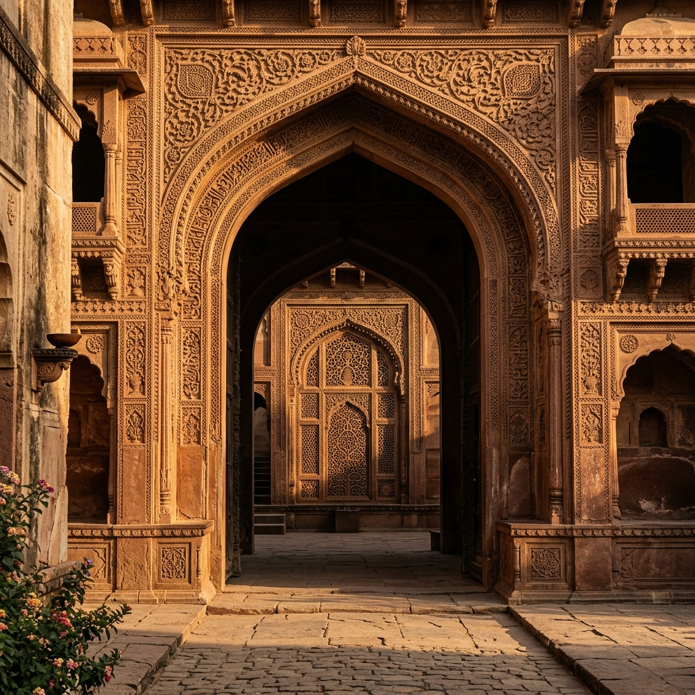
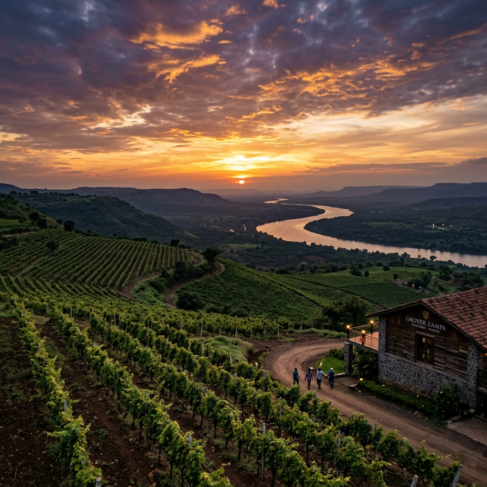

A Palace of Flavour
Panchratna — Sanskrit for "Five Jewels" — was conceived as a celebration of India's most royal culinary tradition. Five courses. Five jewels. One transcendent evening.
Founded with the vision of preserving and elevating the grandeur of Mughal vegetarian cuisine, our kitchen follows recipes that trace their lineage through the royal kitchens of the Mughal court — adapted for the modern palate, yet faithful to the spirit of centuries past.
Every herb is sourced locally from Nashik's fertile lands. Every spice is hand-selected from trusted estates. Every dish carries the weight of a story.

Nashik — Sacred & Sublime
We are rooted in Nashik — Maharashtra's wine capital, pilgrimage hub, and one of India's most spiritually vibrant cities. Home to the Godavari's sacred banks, the ancient Trimbakeshwar Shiva Temple, and rolling vineyard estates, Nashik carries a rare duality: the sacred and the sensual.
Panchratna was born to embody this duality. We honour the spiritual tradition of pure vegetarian cuisine while drawing aesthetic inspiration from the opulent vineyard culture that has made Nashik a destination for the discerning.
Our dining room offers vineyard vistas in the evening light — a reminder that great food, like great wine, is born from patience, land, and love.
The Soul of Nashik
"Nashik does not merely feed you — it nourishes your very soul. And it is in this spirit that Panchratna serves."
The Kumbh Mela, held here on the banks of the Godavari, draws millions who seek spiritual renewal. The same river that sanctifies also irrigates the vine rows from which Nashik's celebrated wines emerge. Panchratna is the intersection of these two worlds — the meditative and the magnificent.
Our chefs draw from the Deccan spice routes, the Mughal court records, and the seasonal bounty of Maharashtra's farms to craft dishes that feel both deeply rooted and utterly contemporary.
Three Pillars of Panchratna
Our recipes trace their lineage to the Mughal kitchens of Awadh and Kashmir — adapted through generations of master cooks who valued patience and precision above all else.
We celebrate the complete beauty of vegetarian cuisine — proving that restraint and richness are not opposites but two sides of the same extraordinary coin.
We are inseparable from Nashik — its vineyards, its ghats, its ancient temples, and its modern ambition. The city's essence flows through every dish we serve.
Our Chef's Vision
"I grew up tasting the seasons in my grandmother's kitchen in Pune — the first rains in a bowl of soup, the summer in a glass of lassi. At Panchratna, I try to bottle that feeling. Not nostalgia alone — but a living, breathing memory of what Indian food can be when it is truly loved."